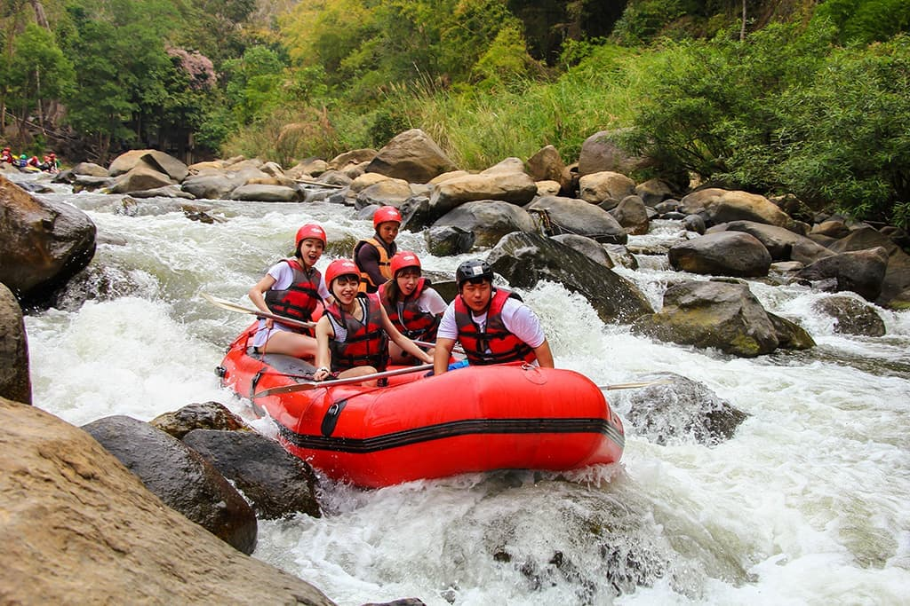

We exist to turn every river trip into a memory worth sharing. Our mission is to blend safety, excitement, and hospitality so every guest leaves with a smile and a story to tell.

Rapids Adventure Company
History
Founded by a small group of river enthusiasts, our company began with a single raft and a big dream of exploring the wildest waters with friends and families.
Over time, we built a reputation for careful guiding, local knowledge, and unforgettable moments on the river.
Today, we continue to lead guests through thrilling whitewater runs while keeping every trip safe, welcoming, and full of adventure.
Adventure Awaits You!